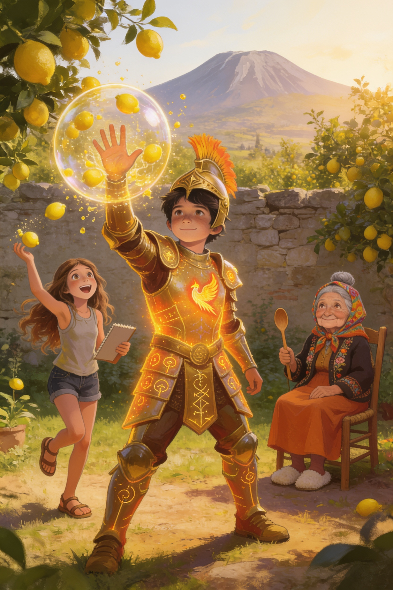
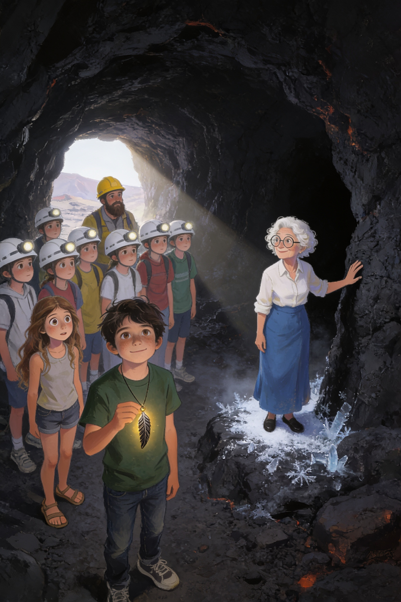
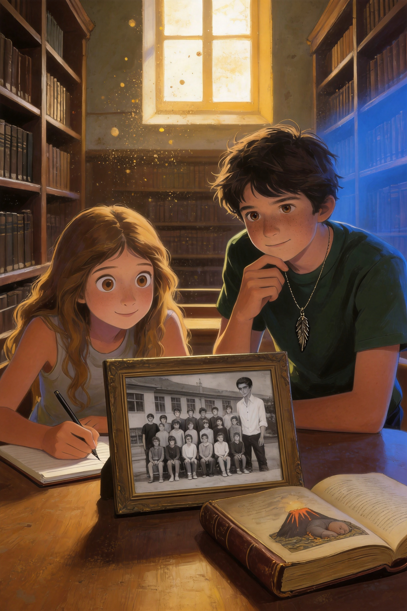
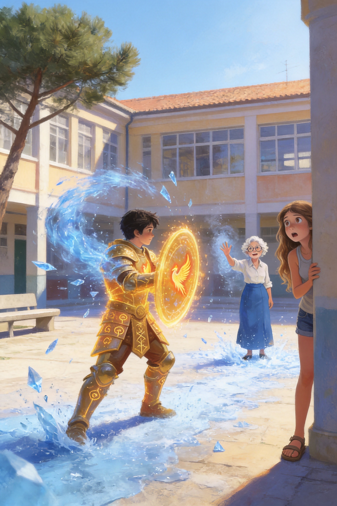

Il Custode
dell'Etna
Vlad
Vlad Editore
Vlad
Vlad Editore
Il Custode dell'Etna
Capitolo 1
✦ ✦ ✦
Alle otto e cinque di un martedì di ottobre, Vlad correva lungo il corridoio della scuola con lo zaino aperto e mezzo panino in bocca.
Dalle finestre entrava l'aria tiepida della piana di Trappitello, che profumava di limoni e di terra. Il mare era lontano, a due chilometri, ma quando tirava il vento giusto sembrava arrivare fin lì per dirti di non preoccuparti. Peccato che il vento non dovesse spiegare niente alla prof di italiano.
— Vlad! — sibilò una voce dietro la porta della seconda media. — Sbrigati!
Era Ludovica. Teneva la porta socchiusa e faceva segni con le mani come un addetto al decollo degli aerei.
— Sei arrivato proprio sulla campanella — disse. — Ancora un secondo e il bidello chiudeva il portone.
— Lo so, lo so — rispose Vlad, ingoiando l'ultimo boccone. — Mia nonna mi ha fatto mangiare tre pirozhki prima di uscire. Con la nonna Tanya non si può dire di no.
— Hai della marmellata sul mento.
Vlad si pulì con la manica. — Adesso?
— Adesso va bene.
Entrarono insieme. La classe era ancora mezza sveglia e mezza no. Sulla lavagna di gesso qualcuno aveva disegnato un'Etna con due occhi e la lingua di fuori. Thomas, in piedi su una sedia, litigava con il cavo della LIM, che da due giorni faceva i capricci. Marco e Stefano discutevano di calcio a bassa voce, ma non troppo bassa. Salvatore, in fondo, fissava lo zaino di Vlad con occhi pieni di speranza.
— Hai ancora dei pirozhki? — sussurrò.
— Salvatore, sono le otto e dieci.
— Appunto. Mancano solo due ore e quarantacinque minuti alla merenda.
Vlad scosse la testa e si lasciò cadere al suo banco, accanto a quello di Ludovica. Lei gli passò un fazzoletto senza guardarlo. Erano migliori amici dalla quarta elementare, da quando Vlad era arrivato dalla Russia senza sapere quasi una parola di italiano e Ludovica era stata la prima a sedersi accanto a lui. Certe cose, tra loro, non c'era bisogno di dirle.
Le prime tre ore volarono tra matematica, ancora matematica e tecnologia, la materia preferita di Vlad. Poi arrivò la merenda delle dieci e cinquantacinque e, alle undici e cinque, la campanella della quarta ora.
Sulla porta comparve la professoressa Marcella Siligato, con la borsa piena di libri e una matita infilata tra i ricci bianchi.
— Ciao, ragazzi! — disse con voce calda. — Sedetevi, sedetevi. Dopo la merenda si perde sempre qualcuno, quindi faccio un piccolo appello. E poi vi voglio raccontare una storia.
Un'altra storia! La classe si illuminò. La prof Siligato era la preferita di tutti: trasformava anche la grammatica in un'avventura.
Cominciò l'appello, e ogni nome portò con sé il suo piccolo rumore.
— Alice.
— Presente! — Alice alzò la mano così in alto che quasi toccò il soffitto.
— Aurora.
— Presente. — Aurora stava finendo un disegno e non alzò neppure gli occhi.
— Beatrice.
— Presente, prof!
— Jaela. Jasmin.
— Presenti! — risposero insieme, e si guardarono ridendo.
— Ludovica. Manuela. Marco.
— Presente — disse Ludovica. — Presente — fece eco Manuela. — Presente, e abbiamo vinto noi ieri — aggiunse Marco, e Stefano gli tirò una gomitata.
— Martina. Matilde. Mia.
— Qui! — Tre voci, tre mani, un solo coro.
— Reyana. Riccardo.
— Presente — disse Reyana, tranquilla. Riccardo salutò con un inchino da re. — Presente, Vostra Maestà della Letteratura!
— Salvatore. Simone. Sofia. Stefano.
— Presente. — Presente. — Ci sono. — Presente, e non è colpa mia se Marco parla troppo.
— Thomas. Vittoria. Vlad. Wijdane.
— Sono qui — disse Thomas dalla sedia, con un cavo in mano. — Quasi funziona.
— Presente — sorrise Vittoria.
— Presente — disse Vlad.
— Presente anch'io — disse Wijdane, e la prof chiuse il registro con un sorriso soddisfatto.
— Bene. Tutti presenti, anche la lavagna di Thomas, speriamo. Allora, ragazzi. Oggi non parliamo di verbi.
Un mormorio di gioia attraversò la classe.
— Oggi parliamo di leggende. E in particolare di una che riguarda quella lì.
La prof indicò la finestra. Oltre i tetti e i limoneti della piana, si vedeva l'Etna: grande, scura, con un filo sottile di fumo bianco che saliva dalla cima.
Vlad sentì qualcosa. Non un rumore: più una piccola scossa, sotto la maglietta, contro il petto. Portò la mano al collo, dove teneva il ciondolo di metallo scuro a forma di piuma che la nonna gli aveva messo quando aveva sei anni, dicendogli: «Non toglierlo mai».
Era tiepido. Più del solito.
— Tanto tempo fa — cominciò la prof Siligato, camminando lenta tra i banchi — gli antichi Greci raccontavano che sotto l'Etna vivesse un gigante. Si chiamava Tifeo. Era così grande che la sua testa toccava le stelle, e dai suoi occhi uscivano scintille di fuoco.
— Come un drago? — chiese Simone.
— Molto peggio. Un drago, almeno, ha le ali e si stanca. Tifeo non si stancava mai. Un giorno sfidò perfino gli dèi, e Zeus, il più potente di tutti, lo fermò con un fulmine e lo seppellì sotto l'Etna per sempre.
— E ancora adesso è lì sotto? — domandò Sofia, a bocca aperta.
— Così dice la leggenda. E quando si gira nel sonno, la montagna trema e sputa fuoco.
— Prof, ma è vero? — chiese Riccardo, con il suo sorriso da furbetto. — Perché io ieri ho sentito il tremito e ho pensato fosse Salvatore che correva a mangiare.
La classe scoppiò a ridere. Salvatore fece finta di offendersi, ma rise anche lui.
La prof rise, poi si fermò accanto alla finestra. Guardò l'Etna. Rimase così, in silenzio, un po' troppo a lungo.
— Prof? — disse Ludovica.

La professoressa non rispose. Quando parlò di nuovo, la sua voce era diversa: più bassa, più lenta, come se arrivasse da molto lontano.
— Dorme ancora — disse. — Ma non per molto. Anástasi... Presto si sveglierà.
Nella classe cadde il silenzio. Perfino Thomas smise di trafficare con il cavo.
Il ciondolo sul petto di Vlad si scaldò così tanto che dovette stringere i denti.
Poi la prof sbatté le palpebre, si passò una mano sulla fronte e si voltò verso la classe con un sorriso confuso.
— Scusate. Dov'ero rimasta? — Rise piano. — Ho avuto un vuoto. Succede, quando si lavora troppo.
— Stava dicendo di Tifeo — disse Ludovica, piano.
— Ah, già! Tifeo. Certo. Grazie, Ludovica.
Gli altri ripresero a parlare, a sorridere, a sistemarsi sulle sedie. Nessuno sembrava aver fatto troppo caso a quella voce. Nessuno, tranne Ludovica e Vlad, che si scambiarono un'occhiata rapida.
«Anástasi» pensò Vlad. Non sapeva che cosa volesse dire. Eppure la parola gli era rimasta addosso, come il freddo dopo un tuffo.
— Per la prossima lezione — concluse la prof, mentre suonava la campanella della quinta ora — voglio che ognuno di voi inventi una piccola leggenda su un luogo della nostra zona, tra Taormina e Giardini Naxos. Lasciate lavorare la fantasia!
La classe si alzò in un fracasso di sedie. Thomas gridò vittoria: la lavagna si era finalmente accesa, giusto in tempo per mostrare lo schermo nero.
Vlad e Ludovica uscirono per ultimi.
— Hai sentito anche tu, vero? — disse lei, a bassa voce.
— La voce? Sì.
— Sembrava un'altra persona.
— Forse era solo stanca.
— Vlad. — Ludovica lo guardò dritto negli occhi. — Tu hai quella faccia.
— Quale faccia?
— Quella che fai quando sai qualcosa e non vuoi dirlo.
Vlad sorrise, ma non rispose. Si sentiva il ciondolo caldo contro il cuore, come un piccolo sole.
— Dopo scuola — disse alla fine — andiamo in bici fino alla spiaggia di Giardini Naxos?
— Pensavo non lo chiedessi più. Ma prima ci tocca ancora inglese.
Non sapevano ancora che quel pomeriggio, sul mare, qualcosa sarebbe caduto dal cielo.
✦ ✦ ✦
Il Custode dell'Etna
Capitolo 2
✦ ✦ ✦
Quando la campanella delle due e cinque chiuse l'ora di inglese, il sole era ancora alto sopra Trappitello e la giornata sembrava avere tutto il tempo del mondo.
— Prima in spiaggia — disse Ludovica, agganciando lo zaino alla bici. — Poi tutto il resto.
— Tutto il resto cosa? — chiese Vlad.
— Compiti, leggende, la prof con la voce strana. In ordine di importanza.
— E in che ordine sono?
— Prima il mare.
Non c'era niente da discutere. Era sempre stato così, dalla quarta elementare, da quando Ludovica gli aveva insegnato a dire «scoglio» senza ridere e lui le aveva insegnato a dire «спасибо» con l'accento giusto.
Pedalarono giù per la strada che scendeva verso il mare, tra muretti a secco e alberi di limone carichi di frutti gialli.
Dopo due chilometri, l'odore dei limoni lasciò il posto a un altro odore, più salato e più grande. Il mare comparve tra le case di Giardini Naxos, azzurro e pieno di luce, e sullo sfondo, alle loro spalle, l'Etna restava là, silenziosa, con il suo filo di fumo.
Lasciarono le bici contro un muretto e si tolsero le scarpe. In ottobre la spiaggia era quasi vuota: un signore con la canna da pesca, un cane che inseguiva i gabbiani e nessun altro. Le onde arrivavano piano, una dopo l'altra, come se contassero fino a dieci.
Sulla punta della baia si vedevano le rocce nere di Capo Schisò, nate da una vecchia colata di lava.
— Secondo me la prof è preoccupata per qualcosa — disse Ludovica, sedendosi sulla sabbia.
— Secondo me ha solo dormito poco.
— Vlad. Non parlava come una che ha dormito poco.
Vlad tirò fuori il ciondolo da sotto la maglietta e lo guardò. Era meno caldo di prima, ma ogni tanto sembrava battere piano, come un secondo cuore.
— Mia nonna dice sempre che il mondo è pieno di cose che non si vedono — mormorò.
— La tua nonna parla sempre per enigmi — sospirò Ludovica. — Però ha quasi sempre ragione.
Comprarono due arancini al bar del lungomare. Ludovica li chiamava arancine, Vlad arancini, e non erano mai riusciti a mettersi d'accordo. Mangiarono guardando il mare e litigando con gioia.
Poi tirarono fuori quaderno e penna per la leggenda della prof Siligato.
— Io scrivo del pescatore e della sirena di Capo Schisò — disse Ludovica. — Lei lo salva, lui si innamora e poi lei sparisce nella schiuma.
— Che tristezza.
— È una leggenda, mica una fiaba. Tu?
Vlad rimase un po' con la penna in aria.
— Una stella che cade nel mare, e chi la trova diventa il custode di qualcosa.
— Custode di cosa?
— Non lo so ancora.
Ludovica gli rubò il quaderno, lesse due righe e glielo restituì.
— Bella. Un po' strana, ma bella. Mi ricorda quella storia dell'Uccello di Fuoco che mi raccontavi in quarta.
— La fiaba russa?
— Sì, quella della piuma che brillava.
Vlad sorrise. Non sapeva ancora perché, ma toccò il ciondolo a forma di piuma.
Il tempo, in spiaggia, passa in un modo tutto suo. Scrissero, risero, fecero una gara di sassi sull'acqua che vinse il cane del signore con la canna da pesca (non partecipava, ma aveva riportato un sasso a tutti).
Quando alzarono la testa, il sole era sceso dietro Taormina e Castelmola. Il cielo era diventato arancione e rosa, e il mare sembrava d'oro liquido.
— Dobbiamo tornare — disse Ludovica. — Mia madre mi sta già per chiamare.
— Ancora cinque minuti.
— Cinque minuti per davvero?
Vlad non rispose. Qualcosa era cambiato. Non c'era più vento. I gabbiani si erano zittiti tutti insieme, e anche le onde sembravano trattenere il fiato. L'uomo con la canna da pesca raccoglieva in fretta le sue cose, guardando il cielo.
— Che strano silenzio — sussurrò Ludovica.
Il ciondolo sul petto di Vlad si scaldò all'improvviso, e poi più, e più ancora. Da qualche parte, lontano, suonò una nota, come un campanello d'argento.
— Vlad — disse Ludovica, indicando in alto. — Guarda.
Una striscia di luce dorata attraversava il cielo, silenziosa, come una matita che disegna sul vetro. Non veniva dall'Etna e non era un aereo. Scendeva lenta, verso il mare, e dietro di sé lasciava una scia di scintille.
— Una stella cadente — mormorò Ludovica. — Di giorno?
— Non è ancora notte.
— Vlad, le stelle non cadono prima di notte.
La luce toccò il mare a una cinquantina di metri dagli scogli neri di Capo Schisò. Non ci fu nessuno schizzo, nessun rumore. Solo un lampo caldo, e poi l'acqua sotto la superficie cominciò a brillare, come se qualcuno avesse acceso una lampada in fondo al mare.
E Vlad sentì una voce. Non nelle orecchie: dentro la testa, calma e vecchissima, in russo.
— Наконец-то. Ты пришёл.
«Finalmente. Sei venuto.»
— Hai sentito? — chiese a Ludovica.
— Sentito cosa?
Allora capì che la voce era solo per lui.
Vlad si tolse la maglietta e lasciò il quaderno sulla sabbia.
— Dove vai? — Ludovica lo afferrò per un braccio. — No, no, no. Vlad, che stai facendo?
— Devo andare a prenderla.
— Non sai nemmeno cosa è!
— Lo so. — Vlad si fermò, sorpreso lui stesso. — Lo so e basta.
Ludovica lo guardò dritto negli occhi, come faceva quando doveva decidere se fidarsi. Poi lo lasciò andare.
— Se non torni entro dieci minuti, chiamo tua nonna.
— Entro cinque.
— Entro tre. E se mi fai paura, giuro che ti spingo io sotto.
L'acqua era ancora tiepida. Vlad nuotò verso la luce, e più si avvicinava più il fondale diventava chiaro, come se sotto di lui fosse sorto un piccolo sole. Poi la vide: una piuma di luce, grande come il suo braccio, che fluttuava lenta nell'acqua e batteva piano, come un cuore.
Allungò la mano.
Appena le sue dita toccarono la piuma, il ciondolo si staccò dalla catenina e volò verso la luce. Le due piume si unirono in un lampo bianco e dorato, e il mare esplose in una colonna di luce.
Vlad sentì l'acqua spingerlo in alto come un razzo. Qualcosa gli si chiudeva addosso, pezzo dopo pezzo: prima uno stivale, poi un guanto, poi una spalla, poi un casco che, per qualche motivo, si piazzò al contrario.
Schizzò fuori dal mare, fece un giro nell'aria, urlò qualcosa in russo e, dopo una curva molto poco elegante, atterrò di pancia su una roccia nera di Capo Schisò, ancora calda per il sole, in una nuvola di vapore.
Ludovica arrivò di corsa, scalza, con il quaderno in mano.
— Vlad?
— Sì? — rispose una voce metallica da dentro il casco.
— Hai un'armatura.
— Lo so.
— Hai anche il casco al contrario.
Vlad si sistemò il casco con un clangore. Sull'orlo del mare, il sole tramontava dietro Taormina.
— Credo di avere un problema — disse.
— Credo di avere mille domande — rispose Ludovica.
E sotto l'Etna, in quel momento, qualcosa di molto antico si girò nel sonno.
✦ ✦ ✦

Il Custode dell'Etna
Capitolo 3
✦ ✦ ✦
L'armatura sparì da sola, mentre l'ultimo pezzo di sole scivolava dietro Taormina. Le placche si sciolsero in scintille, come burro su una padella calda, e Vlad si ritrovò seduto sulla roccia in costume bagnato, con i brividi e il ciondolo di nuovo al collo. La catenina era intatta. La piuma brillava piano, come una piccola lampada.
Il telefono di Ludovica vibrò. Era sua madre.
— Devo andare — disse lei, senza smettere di fissare Vlad. — Ma domani, prima della campanella, mi spieghi tutto.
— Prometto.
— E questa cosa resta tra noi.
— Giuro.
— Anche se la prof ci interroga?
— Anche se ci interroga.
Ludovica annuì, seria come una che ha appena firmato un contratto, e corse alla bici.
Vlad pedalò verso casa nel buio che saliva dai limoneti. Le prime luci di Trappitello brillavano come lucciole. Davanti a lui l'Etna era un'enorme sagoma nera contro le stelle, e per tutto il tragitto ebbe la strana sensazione che la montagna lo stesse guardando.
La piuma sul petto era calda, tranquilla, e batteva piano.
Quando arrivò al cancello, la finestra della cucina era accesa. E sulla soglia, con un foulard colorato in testa e un cucchiaio di legno in mano, c'era nonna Tanya.
Non sembrava preoccupata. Non sembrava nemmeno arrabbiata perché era tardi. Sembrava una che aspetta un treno e sa che sta per arrivare.
— Владик — disse. — Наконец-то.
Vlad sentì un brivido lungo la schiena. Era la stessa parola della voce nel mare.
— Nonna... — Appoggiò la bici al muro. — Tu...
— Entra — disse lei, con quel sorriso che non spiegava mai niente. — Ti si fredda la cena. E poi abbiamo molto da dirci.
La cucina profumava di cipolla dolce, di burro e di tè nero. Sul tavolo, su un piatto con i bordi dipinti a fiori, c'erano i pirozhki, ancora caldi, e accanto un bicchiere fumante nel suo sottobicchiere d'argento.
Nonna Tanya gli mise un asciugamano sulle spalle e non disse nulla finché Vlad non ebbe mangiato il primo pirozhok intero.
— Non mi chiedi dove sono stato? — domandò lui, con la bocca piena.
— So dove sei stato. — Lei si sedette di fronte a lui e sfiorò con un dito il ciondolo a forma di piuma. — La Piuma ti ha trovato.
— Quale piuma?
— Questa. — Nonna Tanya sorrise. — Te l'ho messa al collo quando avevi sei anni, e ti ho detto di non toglierla mai. Non te l'ho detto perché era bella.
Vlad abbassò lo sguardo. La piuma, sul tavolo, brillava piano nel cerchio di luce della lampada.
— Mangia, Vladik — disse la nonna, con voce dolce. — Questa storia è lunga. È più lunga di quanto credi.
— Tanto tempo fa, in un villaggio vicino a un bosco russo, un Uccello di Fuoco volò sopra le case e lasciò cadere una piuma. Tu la conosci dalle fiabe: Жар-птица, lo Zhar-ptitsa. Nelle fiabe l'Uccello di Fuoco è un sogno. Nella nostra famiglia era vero.
— Vera? — sussurrò Vlad.
— Vera. E la famiglia che la trovò capì una cosa: la Piuma non è un tesoro. È una responsabilità. Chi la porta diventa il Custode: riceve una armatura di luce e un compito.
— Che compito?
Nonna Tanya guardò fuori dalla finestra. Nel buio, l'Etna si disegnava nero contro le stelle.
— Vegliare su quella montagna. Sotto c'è qualcuno che deve restare addormentato. Qui lo chiamano Tifeo. Da noi, nelle storie, aveva altri nomi. È molto grande, molto antico, e quando si sveglia, la terra trema.
— Come nella leggenda della prof.
— Le leggende — disse la nonna — sono solo storie vere che qualcuno ha dimenticato.

— Per questo siamo venuti qui — continuò. — Il mio bisnonno portò la Piuma dalla Russia fino ai piedi dell'Etna, nascosta in un medaglione, in una missione che è passata da padre a figlio, da madre a figlia. Non dovevamo usarla. Dovevamo solo custodirla, finché la Piuma non avesse scelto da sola.
— E ha scelto me.
— Ha scelto te.
— Ma perché io? — Vlad strinse il bicchiere. — Non sono più forte degli altri. Non sono un genio. Sono solo uno che è arrivato in Italia in quarta elementare senza sapere come si dice «scoglio».
La nonna rise piano. Poi gli prese la mano.
— Non lo so, Vladik. La Piuma sceglie, e non sempre spiega. Lo capirai quando sarà il momento. Per ora, ricorda tre cose.
Alzò un dito.
— Prima: la Piuma vive di sole. Se la tieni al buio troppo a lungo, si spegne, e con lei l'armatura. Ricaricala alla luce.
Un altro dito.
— Seconda: non dire a nessuno chi sei.
— Ludovica lo sa già — ammise Vlad, arrossendo.
— Lo so. — La nonna sorrise. — Ludovica si è seduta accanto a te quando non sapevi una parola di italiano. Una amica così può sapere tutto.
— E la terza?
Nonna Tanya si fece seria.
— Terza: non fidarti di una voce che non è la sua. Se qualcuno parla e non sembra davvero lui, stai attento.
Vlad posò il bicchiere.
— Nonna, oggi a scuola è successa una cosa. La prof Siligato, mentre raccontava di Tifeo, ha cambiato voce. Ha detto una parola strana: Anástasi. E poi non si ricordava più niente.
Il cucchiaio di legno si fermò a mezz'aria.
— Anástasi — ripeté piano la nonna. — In greco significa «risveglio».
Per un momento la cucina sembrò più fredda. Poi Nonna Tanya scosse la testa.
— Non dire niente alla professoressa. Non ancora. Prima osserviamo. Una nonna osserva sempre.
— Da domani — disse alla fine — dopo scuola, ti insegno a usare la Piuma. Un Custode che non sa cosa fa è pericoloso per sé e per gli altri. Intesi?
— Intesi, nonna.
— Ora a letto. Hai le guance rosse come un pomodoro.
Vlad si stese nel suo letto con la finestra socchiusa. Dalla camera si vedeva l'Etna, nera sotto le stelle, con un puntino rosso sulla cima, come una brace nascosta. Pensò alla voce nel mare, a Ludovica con il quaderno, alla prof che aveva detto «presto si sveglierà».
Il ciondolo sul petto si accese piano, e da qualche parte, dentro la sua testa, la voce vecchissima sussurrò in russo:
— Спи, Влад. Завтра всё начнётся.
«Dormi, Vlad. Domani comincia tutto.»
Fuori, per un solo istante, il vetro della finestra si coprì di brina, in una notte tiepida di ottobre. Poi si sciolse, e non ci fu più niente.
✦ ✦ ✦
Il Custode dell'Etna
Capitolo 4
✦ ✦ ✦
Il mattino dopo, Ludovica aspettava Vlad davanti al cancello della scuola con il quaderno aperto e l'espressione di un giudice.
— Allora — disse. — Tutto. Dall'inizio.
— Siamo davanti alla scuola. Ci sentono.
— Parla piano. Ma parla.
Vlad le raccontò tutto nel cortile, a voce bassa, mentre i compagni si accalcavano verso l'ingresso: la Piuma, i Custodi, Tifeo, la nonna. Quando finì, Ludovica rimase zitta quasi un minuto, che per lei era un record.
— Quindi sei un supereroe.
— Custode.
— Custode con armatura dorata e una montagna da sorvegliare.
— Più o meno.
— Va bene. — Ludovica chiuse il quaderno. — Primo: da oggi sono la tua assistente tecnica. Secondo: voglio vedere l'armatura quando vuoi. Terzo: tua nonna è la nonna più forte del mondo.
Alla merenda delle dieci e cinquantacinque incontrarono la professoressa Siligato nel corridoio, con una pila di quaderni sotto il braccio.
— Ciao, ragazzi! Come va con le leggende?
— Bene — rispose Vlad, in fretta.
— Prof — disse Ludovica, con l'aria più innocente del mondo — cosa significa «Anástasi»?
Vlad le pestò un piede, ma era troppo tardi.
La prof aggrottò la fronte.
— «Anástasi»? Dove l'hai sentita?
— Da lei. Ieri.
— Da me? — Sorrise, confusa. — Ieri vi ho parlato di Tifeo, di Zeus, della lava... ma non ricordo di aver detto una parola così. Davvero.
Si strinse nelle braccia, come se avesse freddo.
— Fa freddo qui, vero?
Fuori c'era il sole e in corridoio si stava bene. Eppure, per un istante, dalla bocca della prof uscì un filo di vapore bianco, come in una mattina d'inverno.
— Scusate, sono un po' stanca — disse lei, e se ne andò.
Vlad e Ludovica si guardarono.
— Non ho detto niente! — sussurrò Ludovica. — Ho solo chiesto una parola.
Dopo la sesta ora, Vlad e Ludovica pedalarono fino a Trappitello, dove nonna Tanya li aspettava nel limoneto dietro casa, tra un vecchio muro di pietra e file di alberi carichi di frutti.
— Bene — disse la nonna, con il cucchiaio di legno in mano. — La prima lezione è la più importante. L'armatura non ascolta quello che dici. Ascolta quello che senti.
— E come si fa a sentire? — chiese Vlad.
— Prova.
Vlad chiuse gli occhi e pensò, con tutte le forze: «Armatura!»
Non successe niente.
Allora pensò, più forte: «ARMATURA!»
Sul suo piede destro comparve uno stivale dorato. Solo uno.
— Prova numero uno — annotò Ludovica, scrivendo sul quaderno. — Risultato: uno stivale.
— Fammi riprovare.
Questa volta si agitò, strinse i pugni e per sbaglio pensò a tutti i compiti di matematica. L'armatura comparve in un lampo, ma il casco gli scivolò sugli occhi e Vlad cominciò a camminare a tentoni verso un albero di limoni.
— Vlad, attento all'albero! — gridò Ludovica.
Troppo tardi. Vlad diede una spallata al tronco e l'armatura gli regalò una forza che non aveva chiesto: l'albero tremò da cima a fondo e almeno duecento limoni caddero insieme, come una pioggia gialla.
Ludovica si coprì la testa con il quaderno. Nonna Tanya non si mosse dalla sedia.
— Ne ho tanti — disse, tranquilla, mentre un limone le rotolava sulle pantofole.
Vlad si sollevò il casco con due dita. Era rosso in faccia e coperto di foglie.
— Non riesco a controllarla. A volte non fa niente, a volte fa troppo.
Ludovica uscì da sotto il quaderno, scrollandosi via una scorza di limone dai capelli, e lo guardò con attenzione. Poi guardò di nuovo il quaderno, dove aveva scritto una riga dopo l'altra.
— Aspetta — disse. — Ho notato una cosa. Ogni volta che hai respirato piano, l'armatura ha fatto quello che volevi. Ogni volta che ti sei agitato, è impazzita.
— Cioè?
— Cioè non è magia cattiva. È come un computer. Se gli dai ordini confusi, fa confusione.
— Quindi serve un programma — disse Vlad, che di computer si intendeva. — Comandi semplici, uno alla volta.
— Esatto! Tre comandi, tre parole. Una per ogni potere. — Ludovica scrisse in stampatello: «FORZA», «SCUDO», «LUCE». — Per essere sicuri che l'armatura capisca bene, le diciamo in russo, così non si confonde con le parole di tutti i giorni.
— Сила, Щит, Свет — tradusse Vlad. Gli piaceva l'idea. Una lingua solo loro.
Fece tre respiri lenti, come aveva detto Ludovica. Dentro, uno. Fuori, due. Poi alzò la mano.
— Щит!
Una bolla dorata, trasparente come sapone, si aprì davanti a lui. Ludovica prese un limone, prese la mira e lo lanciò con tutta la forza.
Il limone colpì lo scudo e scoppiò in una nuvola di succo e di scintille.
— Funziona! — urlò Ludovica, ridendo. — Un altro!
Lanciò un limone dopo l'altro, e ogni volta lo scudo resisteva. Dal fondo del giardino, nonna Tanya li guardava con un sorriso che sembrava dire: «Lo sapevo».

Provarono anche gli altri due comandi. Con «Сила!» Vlad sollevò una botte di legno piena d'acqua come se fosse un cuscino, e la posò con molta cura. Con «Свет!» dal suo palmo uscì un raggio dorato che illuminò il muro di pietra, scoprendo tre lucertole molto offese.
Ma dopo mezz'ora l'armatura cominciò a tremolare. Le placche si fecero pesanti, la luce sul petto si abbassò.
— Mi sento... svuotato — mormorò Vlad, appoggiandosi al muro.
— Il sole! — disse nonna Tanya. — Stenditi dove c'è il sole.
Vlad si sdraiò sulle pietre calde del muro, con le braccia aperte. Quasi subito la piuma sul petto riprese a brillare, e l'armatura riprese colore, come una pianta che beve.
— Sembri una lucertola — commentò Ludovica.
— Una lucertola con l'armatura.
— La più elegante della Sicilia.
Ludovica aprì il quaderno e scrisse, con la sua calligrafia più seria:
Regola 1. Respirare piano prima di ogni comando.
Regola 2. Un comando alla volta.
Regola 3. Ricaricarsi al sole (da lucertole).
Il sole scendeva verso Taormina e il cielo si tingeva di rosa. Ludovica si sedette sul muro accanto a Vlad.
— Ho un'idea — disse. — Domani chiedo alla prof di raccontarci un'altra leggenda. E io osservo.
— Fai attenzione — disse nonna Tanya, senza smettere di sbucciare un limone. — Osserva da lontano. Se qualcosa non è se stesso, non va provocato.
— Da lontano. Promesso.
Vlad guardò l'Etna. La montagna, nera e immensa, sembrava sonnecchiare nella luce rosa. Il ciondolo sul petto fu attraversato da un piccolo brivido, e nella sua testa la voce vecchissima disse, in russo:
— Тот, кто спит, нас слышит.
«Chi dorme ci sente.»
Fu in quel momento che la terra tremò.
Durò solo tre secondi. Un tremito leggero, quasi gentile. Ma tutti i limoni rimasti sugli alberi caddero insieme, con un rumore di mille palline sull'erba, e nonna Tanya si alzò in piedi, con il coltello in una mano e il limone nell'altra, a guardare la montagna.
✦ ✦ ✦
Il Custode dell'Etna
Capitolo 5
✦ ✦ ✦
Il pullman partì alle otto e mezza di un venerdì pieno di sole, con ventuno studenti, due insegnanti e un numero imprecisato di panini.
— Salvatore — disse Riccardo, in fondo — hai già mangiato?
— È una colazione di sicurezza.
— Sono le otto e trentacinque.
— Appunto. Più sicura di così.
Dietro di loro Jasmin e Jaela cantavano a mezza voce, Marco e Stefano discutevano su chi avrebbe portato lo zaino più pesante, e Thomas faceva vedere a Sofia e Alice un video sul funzionamento dei vulcani, con la grande serietà di un ingegnere.
Vlad era seduto accanto a Ludovica, con la fronte contro il finestrino. Il pullman saliva sempre di più, tra boschi di pini e campi di lava nera, e davanti a lui l'Etna cresceva, cresceva, cresceva.
Il ciondolo era tiepido sul petto. Troppo tiepido.
— Tutto bene? — sussurrò Ludovica.
— Sì. Solo un po' di agitazione.
— Ricorda la regola uno: respira piano.
Vlad respirò piano. Dentro uno, fuori due. Funzionò abbastanza.
Davanti, in prima fila, la professoressa Siligato guardava fuori dal finestrino con un'espressione serena e lontana. Aveva una sciarpa di lana bianca, molto più pesante del necessario. Ogni tanto si sfregava le mani.
Il pullman si fermò in uno spiazzo tra due colline di sabbia nera. Una guida con la barba e un casco giallo li aspettava vicino all'ingresso di una grotta, con un cestone pieno di caschi bianchi.
— Benvenuti! — disse. — Questa è una grotta di lava. Si è formata secoli fa, quando la lava è scesa dalla montagna e, nel raffreddarsi, ha lasciato un tunnel. Ci entriamo in fila, con le lampade accese, e nessuno si stacca dal gruppo. D'accordo?
— D'accordo! — risposero tutti.
Ludovica diede una gomitata a Vlad.
— Guarda là.
Sul sentiero di sabbia nera, in mezzo al sole, la professoressa Siligato camminava un po' più indietro degli altri. Dove metteva i piedi, sulla roccia, si formava una sottilissima patina bianca. Brina. In pieno giorno.
Appena la prof si allontanava, il sole la scioglieva. Gli altri non se ne accorgevano: erano troppo occupati a infilare i caschi.
— L'hai vista? — sussurrò Ludovica.
— Sì.
— Sulla montagna fa freddo, certo. Ma la brina viene solo dove cammina lei.
Ludovica tirò fuori il quaderno e scrisse a una velocità allarmante.
— Indizio uno: ci sono quattordici gradi, e nessuno ha la brina sotto le scarpe, tranne la prof.
— Da lontano — le ricordò Vlad. — Dobbiamo osservare da lontano.
— Sto osservando. Con la penna.
Entrarono nella grotta in fila. I raggi delle lampade tagliavano il buio come spade luminose. Le pareti erano nere, lisce, a tratti lucide come vetro, e l'aria diventava più fresca a ogni passo.
— Ecoooo! — gridò Salvatore, e la sua voce rimbalzò tra le pareti: ecoooo... oooo... ooo...
— Mi sa che hai mangiato troppo — commentò Riccardo.
— Ecooo-lo-gico! — rispose Salvatore, e perfino la guida rise.
Stefano, Marco e Thomas facevano a gara a chi illuminava la roccia più strana. Wijdane e Vittoria cercavano forme di animali nelle ombre, e Alice giurava di aver visto un coniglio.
Vlad e Ludovica camminavano in fondo, sempre un po' dietro. La prof Siligato li precedeva di pochi passi.
— Ora, ragazzi — disse la guida — fermiamoci qui. Spegnete le lampade per dieci secondi, e ascoltate il silenzio della montagna.
Cadde il buio. Un buio vero, quello che non si trova in nessuna città, pesante come una coperta.
E in quel silenzio, nella testa di Vlad, risuonò una nota bassissima, enorme, come il respiro di qualcuno molto più grande della grotta.
— Анастази...
Il ciondolo gli bruciò il petto. Vlad strinse i denti.
Quando le lampade si riaccesero, tutti sorridevano, emozionati. Tutti, tranne tre persone.
Ludovica aveva gli occhi spalancati. Vlad stringeva il ciondolo nel pugno. E la professoressa Siligato era sparita dal gruppo.
— Dov'è la prof? — mormorò Ludovica.
La videro, più avanti, nel punto in cui la galleria si restringeva e il buio era più fitto. Aveva appoggiato una mano sulla parete e guardava dentro la roccia, come se ascoltasse. Intorno ai suoi piedi, sul nero della lava, c'era uno strato di brina e cristalli di ghiaccio, bianco e luminoso, che non c'era in nessun altro posto della grotta.
Vlad la sentì parlare, a voce bassissima.
— No... non qui... non ancora...
Non sembrava la sua voce di tutti i giorni. Era un sussurro spaventato, quasi un'implorazione. Si premette le mani sulle tempie, come se dentro la sua testa qualcuno stesse litigando.
Poi la prof si voltò, vide gli studenti, e il suo viso tornò di colpo normale.
— Ragazzi! — sorrise. — Che meraviglia, vero? Venite, venite.

All'uscita la luce li colpì come uno schiaffo. Tutti si stropicciarono gli occhi, ridendo, e la guida distribuì dell'acqua. La professoressa si sedette su un masso, un po' pallida, con la sciarpa stretta al collo.
— Tutto bene, prof? — chiese Beatrice.
— Sì, sì. Solo un po' stanca.
Poi, mentre gli altri si facevano una foto di gruppo, Vlad sentì una voce accanto a sé.
— Vlad.
La prof Siligato lo guardava con occhi chiari e profondi. Sorrideva, ma qualcosa nel sorriso era troppo fermo.
— Mi hanno detto che la tua famiglia è arrivata dalla Russia. Vero?
— Sì, prof.
— Hai mai visto, a casa tua, qualche oggetto antico? Qualcosa che passa da una generazione all'altra? Un gioiello, una pietra... una piuma?
A Vlad si gelò il sangue. Il ciondolo era sotto la maglietta, nascosto, ma lui lo sentì pulsare più forte.
— Solo pirozhki — disse, con la voce più normale che riuscì a trovare. — Mia nonna fa i pirozhki da generazioni.
La prof lo fissò un attimo di più. Poi sbatté le palpebre e rise.
— Pirozhki! Che buoni, devono essere. — Si alzò, come se non avesse mai fatto quella domanda. — Su, ragazzi, tutti sul pullman!
Sul viaggio di ritorno, Vlad si sedette vicino al finestrino. Dietro di loro, Salvatore dormiva con un panino in mano. Ludovica scriveva a tutta velocità.
— Mi spieghi cosa ti ha chiesto?
— Se avevo in casa qualcosa di antico. Una piuma.
Ludovica smise di scrivere.
— Una piuma? Vlad. Lei lo sa.
— Non lo so se lo sa. Ma la prof è sempre vicina alle grotte, e fa domande sulla mia famiglia, e dove passa lei gela tutto. Secondo te è lei che vuole svegliare Tifeo?
— Non lo so — rispose lei, piano. — Ma ricordi come parlava, nella grotta? Sembrava avere paura.
Vlad guardò l'Etna che si allontanava nel finestrino. Sulla cima, il filo di fumo si era fatto più scuro.
✦ ✦ ✦
Il Custode dell'Etna
Capitolo 6
✦ ✦ ✦
Il lunedì mattina, Ludovica arrivò a scuola con una cartellina nuova. Sulla copertina, a pennarello rosso, aveva scritto: DOSSIER S.
— S come Siligato? — chiese Vlad.
— S come Segreto. — Ludovica aprì la cartellina. — Ho messo tutto qui: la voce strana, la brina, il vuoto di memoria, la domanda sulla piuma. Quattro indizi. E manca il quinto.
— Quale?
— Quello che ci dice perché.
Durante la merenda, Riccardo li vide cospirare in un angolo e si avvicinò con un sorriso malizioso.
— State organizzando una rapina?
— Una ricerca di scienze — rispose Ludovica, senza battere ciglio.
— Sulla rapina?
— Sui vulcani.
Riccardo alzò le spalle e se ne andò, convinto di aver perso un'ottima occasione.
— Dopo la sesta ora — sussurrò Ludovica — in biblioteca.
Alle due e cinque, quando la campanella liberò la scuola, Vlad e Ludovica salirono invece al piano di sopra, dove una porta di legno scuro portava la scritta «Biblioteca».
Il signor Nino, il bidello, stava spazzando il corridoio con una lentezza da filosofo.
— Ragazzi, che ci fate ancora qui?
— Ricerca di scienze — disse Ludovica.
— Sui vulcani — aggiunse Vlad.
Il signor Nino li squadrò un attimo, poi tirò fuori un mazzo di chiavi grande come una sveglia.
— Dieci minuti. E non rovesciate niente.
La biblioteca era piccola e piena di polvere dorata. Scaffali di legno fino al soffitto, libri con le copertine consumate, e una finestra da cui entrava la luce del pomeriggio. Sembrava un posto dove nessuno entrava da anni, e dove ogni pagina conosceva un segreto.
Ludovica scorse gli scaffali con il dito.
— Geografia... Storia di Taormina... Vulcani... Eccolo qui.
Tirò fuori un libro grosso, con la copertina marrone di pelle. Sul dorso, a lettere dorate: Leggende dell'Etna.
Lo appoggiarono sul tavolo e lo aprirono con delicatezza. Le pagine profumavano di vecchio. A pagina trentadue c'era un disegno a colori: un gigante enorme, addormentato sotto un vulcano, con le braccia incrociate sul petto e il fumo che usciva dalla sua bocca.
— Tifeo — sussurrò Vlad.
Ludovica lesse ad alta voce, sottovoce:
— «Si narra che il gigante dorma finché la luce veglia su di lui. Ma chi riuscisse a risvegliarlo, dicono i vecchi, riceverebbe da lui un potere senza limiti, sopra ogni cosa che vive e che non vive.»
Per un momento nessuno dei due parlò. Un granello di polvere dorata danzava nella luce.
— Un potere senza limiti — ripeté Ludovica, e prese la penna. — Ecco il quinto indizio. Il perché.
— Vuole il potere? La prof?
— Pensaci. Si interessa a Tifeo. Fa domande sulla tua piuma. Va sempre nelle grotte. E tutti pensano che sia una persona normale.
Vlad provò a immaginare la prof Siligato che si trasformava in una strega e non ci riuscì. Ma non riuscì nemmeno a dire che Ludovica aveva torto.
Sul tavolo, accanto al libro, c'era una vecchia cornice di legno, coperta di polvere. Ludovica la prese e soffiò sul vetro.
— Guarda. Una foto di classe.
Era in bianco e nero, un po' sbiadita, con i bordi arrotolati. Tredici ragazzi in tre file, davanti alla scuola. Sul retro, a matita, c'era scritto: Seconda media, vent'anni fa.
— Cerchiamo la prof — disse Ludovica.
La trovarono in fretta, in fondo, con la sua stessa risata e i capelli ricci e ancora scuri. Era giovane, forse trent'anni, accanto a un cartello con scritto «2ª A».
— Era già qui — mormorò Vlad.
Ludovica osservò la foto con attenzione.
— Guarda quel ragazzo, all'angolo. Quello che non sorride.
Vlad si chinò. Era un ragazzo di tredici anni, con i capelli scuri e il mento un po' alzato. Non guardava l'obiettivo come tutti gli altri: guardava un punto fuori dalla foto, come se sapesse qualcosa che gli altri non sapevano.
— Che occhi — disse Ludovica. — Sembrano... non so.
Vlad sentì il ciondolo vibrare, appena. Ma stava già pensando al libro, e non ci fece caso.

Nell'ultima pagina del libro c'era una tasca di carta con una scheda di prestito. Ludovica la tirò fuori.
— Vlad. Guarda.
Era una lunga lista di firme, vecchissime e nuove, in biro e in matita. Ma quasi tutte erano della stessa mano, una calligrafia ordinata e inclinata: M. Siligato. Una firma per ogni autunno, venti volte. L'ultima era di dieci giorni prima.
— Lo prende ogni anno — sussurrò Ludovica. — Per vent'anni.
— Forse perché è la prof di italiano. Le leggende...
— Vent'anni di fila, sempre di autunno?
La porta si aprì piano. Il signor Nino sporse la testa dentro, con la scopa in mano.
— Tutto a posto?
— Signor Nino — disse Ludovica — la prof Siligato viene spesso in biblioteca?
Il bidello si grattò il mento.
— La conosco da vent'anni. Allegra, sempre. Ma da qualche settimana è strana. Resta qui fino a tardi, da sola, e a volte parla. Ieri ho sentito la sua voce, ma non rispondeva a nessuno.
— A nessuno? — chiese Vlad.
— Eppure faceva domande. E aspettava le risposte.
Rimisero il libro al suo posto e uscirono nel corridoio, con il cuore che batteva più forte del solito. Davanti alla porta, con la sciarpa bianca stretta al collo, c'era la professoressa Siligato.
— Ancora qui, ragazzi? — sorrise. — Ho visto la luce. Cosa studiavate?
— Vulcani — dissero Vlad e Ludovica, nello stesso istante.
— Ah, bene. — Lo sguardo della prof si fermò sulla copertina marrone che spuntava dallo scaffale. — Il mio libro preferito. L'avete trovato.
Per un attimo nessuno parlò. Poi la prof abbassò la voce.
— State attenti, ragazzi. Alcune leggende... è meglio non svegliarle.
Era un avvertimento o una minaccia? Vlad non riuscì a capirlo. Il ciondolo sul petto gli si era fatto improvvisamente gelido.
— Vlad — disse lei, guardandolo negli occhi. — Domani, dopo la sesta ora, aspettami nel cortile. Ho bisogno di parlarti. Da solo.
— Da solo? — ripeté Ludovica.
— Una cosa importante. Solo con lui.
Sorrise. E, mentre si allontanava, nel corridoio caldo, una sottile brina bianca si formò sul vetro della finestra vicino alla porta.
— Non devi andare — disse Ludovica, appena la prof si fu allontanata. — È una trappola.
— Se non vado, non scopriremo mai la verità.
— Se vai, scoprirai troppo.
Quella sera, nella cucina profumata di tè, Vlad raccontò tutto a nonna Tanya: il libro, la scheda di prestito, la foto, il bidello, e l'invito della prof.
La nonna ascoltò senza interrompere. Quando lui ebbe finito, posò il cucchiaio di legno sul tavolo.
— Vai — disse.
— Nonna?
— Se non vai, lei verrà a cercarti. E sarà peggio, perché sceglierà lei dove e quando. Meglio il cortile della scuola, con il sole e con gli occhi di tutti.
— E se è davvero la nemica?
— Allora lo scopriremo. — Gli sorrise, e il sorriso aveva un'ombra di preoccupazione. — Ma porta la Piuma carica. E dì a Ludovica di restare vicino. Non nel cortile, ma abbastanza vicino da sentire se chiami.
Vlad annuì. Il ciondolo sul petto batteva piano, come un cuore, e fuori l'Etna sembrava più vicina del solito.
✦ ✦ ✦
Il Custode dell'Etna
Capitolo 7
✦ ✦ ✦
Quel martedì Vlad fece colazione sul balcone, con le braccia aperte verso il sole, come un girasole nervoso.
— Mangia — disse nonna Tanya, mettendogli davanti un pirozhok. — Ma prima ricaricati. Non voglio che tu vada a quell'incontro con meno luce di una lucciola.
Alla fine della sesta ora, Ludovica lo prese da parte, davanti ai distributori.
— Ho preparato un piano.
— Quale?
— Io mi nascondo dietro la colonna del cortile. Se sei in pericolo, dici una parola in codice, e io corro.
— Quale parola?
— Pirozhki.
— È una parola che io dico di solito.
— Per questo nessuno sospetterà.
Vlad sorrise, nonostante lo stomaco annodato. Respirò piano, una volta, due volte. Poi attraversò il corridoio svuotato e uscì nel cortile.
Il cortile della scuola era quasi vuoto. Qualche studente usciva dal cancello, con lo zaino in spalla, e i pullman rombavano in lontananza. Il sole alto illuminava le panchine di cemento e il vecchio pino al centro.
Sotto il pino, con la sciarpa bianca stretta al collo, c'era la professoressa Siligato. Aspettava, immobile, e guardava il cielo.
— Vlad — disse, senza voltarsi. — Grazie di essere venuto.
— Cosa voleva dirmi, prof?
Lei si girò. Sorrideva, ma il sorriso era troppo composto.
— Voglio farti una domanda, e vorrei una risposta sincera. Sei tu il Custode?
Vlad sentì il cuore saltare un battito. Dietro la colonna, a venti passi, Ludovica smise di respirare.
— Non so di cosa parla.
— Non mentire. — La voce della prof cambiò di colpo: più bassa, più fredda, come se uscisse da una grotta. — La Piuma ti ha scelto. Lo sento. Lo sentono tutti, sotto la montagna.
Ai suoi piedi, sull'asfalto caldo, si formò una patina bianca che cominciò a correre verso Vlad come una ragnatela.
— Consegnamela — disse la prof, e la sua mano si alzò. — Non voglio farti del male.
— Non so cosa stia dicendo.
— Allora lo dimostrerò.
Dalle sue dita partì una raffica di schegge di ghiaccio, lunghe come coltelli, che sibilarono nell'aria.
Vlad non pensò. Il suo corpo reagì prima della sua mente. Respirò una volta, una soltanto, e disse:
— Щит!
La bolla dorata si aprì davanti a lui con un lampo, e le schegge ci si infransero sopra con un rumore di vetri rotti. L'armatura si richiuse addosso a Vlad, pezzo dopo pezzo, senza errori, senza stivali spaiati e senza caschi sugli occhi: placche dorate, rune luminose, la piuma di fuoco sul petto.
Fu perfetta. Fu esattamente come l'aveva imparata nel limoneto.
— Eccoti — disse la voce fredda della prof, quasi con piacere. — Il Custode.
Dietro la colonna, Ludovica si morse un pugno per non gridare.
Cominciò lo scontro.
La prof fece un gesto e dal terreno salì un muro di ghiaccio, alto due metri. Vlad lo sfondò con un «Сила!» e un pugno che fece tremare l'asfalto. Lei aprì le braccia e una nebbia gelida si sparse su tutto il cortile, appannando i vetri, trasformando il fiato in nuvole.
Il freddo mordeva. Le placche dell'armatura diventavano più pesanti a ogni respiro, e la luce sul petto di Vlad tremolava.
«Si sta scaricando» pensò. «Troppo presto.»
Un'altra raffica di ghiaccio lo costrinse a rotolare dietro una panchina. Il cortile era diventato un campo di cristalli, con il sole che si spegneva dietro la nebbia.
— Vlad! — gridò una voce. Ludovica era uscita un attimo dalla colonna, con il quaderno stretto in mano. — Il sole! Il sole è dietro di te! Il ghiaccio si scioglie con il sole!
Vlad alzò gli occhi. Sopra il tetto della scuola, un varco nella nebbia lasciava passare un raggio dorato.
L'idea geniale gli arrivò tutta insieme.

Vlad corse in pieno campo, uscì dalla nebbia e si piazzò con il sole alle spalle, come un cavaliere con la luce dietro la schiena. Alzò la mano, ricordandosi la regola uno. Dentro uno, fuori due.
— Свет!
Dal suo palmo partì un raggio dorato, largo e caldo, che attraversò il cortile e squarciò la nebbia. I cristalli di ghiaccio si sciolsero in una pioggia di gocce luminose. L'aria si fece tiepida in un istante. E il raggio colpì la professoressa Siligato in pieno petto.
Lei vacillò. Per un attimo, un attimo solo, i suoi occhi cambiarono. Il ghiaccio sparì dal suo sguardo, e restarono due occhi umani, spaventati, pieni di lacrime.
— Vlad... — sussurrò, con la voce di sempre. — Scappa... Non sono io... Ti prego, non sono io... mi dispiace...
Vlad si fermò, con la mano ancora tesa. Dietro la colonna, Ludovica si portò le mani alla bocca.
«Non è lei» pensò Vlad. «Non è lei che comanda.»
Poi il viso della prof si contrasse, come se una mano invisibile le stringesse la gola. Quando sollevò lo sguardo, gli occhi erano di nuovo freddi e chiari.
— Insolente — disse la voce che non era la sua.
Tutto accadde in un attimo. Dalla manica della prof scattò una catena di ghiaccio sottile e veloce, come un serpente trasparente. Vlad cercò di schivarla, ma era stanco: la luce era quasi finita. La catena gli si avvolse al collo, strinse il ciondolo e tirò.
— No! — gridò Vlad.
La catenina si spezzò. La piuma volò nella mano della prof, brillando come una piccola stella prigioniera, e l'armatura di Vlad si sciolse in scintille. Lui cadde in ginocchio sull'asfalto bagnato, svuotato, con le mani vuote.
La professoressa guardò la Piuma, e sorrise di un sorriso che non era suo.
— Grazie, piccolo custode — mormorò. — È la luce che tiene addormentato il gigante. Senza di lei, Tifeo si sveglierà.
— Restituiscila! — Vlad cercò di rialzarsi, ma le gambe non lo reggevano.
— Troppo tardi.
La prof si voltò e corse. Corse come nessun essere umano avrebbe potuto: lasciando dietro di sé una scia di brina sull'asfalto, sul cancello, sulla strada. In pochi secondi diventò una macchia bianca in lontananza, diretta verso la montagna.
Ludovica arrivò di corsa, scalza, con le scarpe in mano e il quaderno sotto il braccio. Si inginocchiò accanto a Vlad.
— Stai bene? Sei ferito?
— No. — Vlad si portò una mano al petto, dove prima c'era il ciondolo. Sentì solo il vuoto. — Ha preso la Piuma.
— L'ho visto.
— Senza la Piuma non posso...
— Lo so. — Ludovica gli strinse la mano. — Ma hai visto anche tu i suoi occhi, vero? Prima che cambiassero di nuovo.
— Aveva paura. Mi ha detto di scappare. — Vlad strinse i pugni. — Non è lei che vuole svegliare Tifeo. Qualcuno la sta usando.
— Allora non possiamo lasciarla sola.
Il cielo sopra la scuola si era fatto grigio, di colpo, in un pomeriggio d'ottobre. E lontano, sulla cima dell'Etna, un filo di fumo nero salì dritto verso le nuvole, come un dito che indica qualcosa.
— Dobbiamo andare da tua nonna — disse Ludovica. — Subito.
✦ ✦ ✦